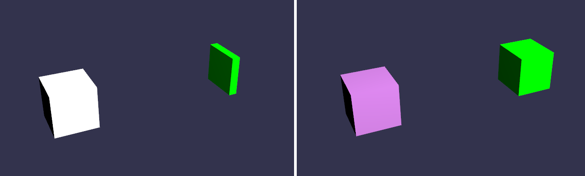
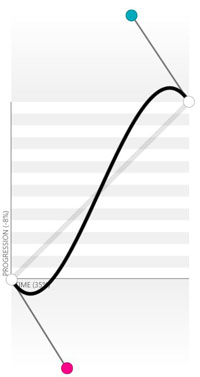

你的场景看起来越来越好了，但是它一直是静态的。为了给它带来活力，我们将学习怎样让你的电脑按照你选择的方式移动你的网格。

最终效果
有两种基本方式在您的场景中处理动画。第一种是定义一系列关键帧并定义你的物体在每个关键帧时的状态。第二种则适用于更复杂的动画，在运行时改变动画代码。
Babylonjs中的动画基于一种叫做“动画”的对象。一个动画是由一些属性和一系列关键帧定义的。每个关键帧都代表了动画在设定的关键时刻的值。
为了完成今天的动画场景，我们开始建立我们的环境：
function createScene() {
//这里。。。像以前一样是你的基本场景代码: [scene, light, camera]
//Create a box
var box1 = BABYLON.Mesh.CreateBox("Box1", 10.0, scene);
box1.position.x = -20;
我们的目标是：移动“立方体1”。首先，建立我们的动画对象：
var animationBox = new BABYLON.Animation("myAnimation", "scaling.x", 30, BABYLON.Animation.ANIMATIONTYPE_FLOAT, BABYLON.Animation.ANIMATIONLOOPMODE_CYCLE);
参数里包含了许多信息:
参数1 - 动画的名字，没什么特别的.
参数 2 - 相关的属性。这可以是任意的网格属性，取决于你想要改变哪个属性。在这里我们想在x轴上缩放一个物体，所以这个属性是“scaling.x”。
参数3 - 美妙请求的帧数：规定了动画中可能的最大帧数.
参数 4 - 变化类型。在这里你决定并输入将要被改变的是什么类型的值：他可能是一个浮点数（比如一个运动），也可能是一个向量（比如一个方向），或者是一个四元组。可以取的值是：
BABYLON.Animation.ANIMATIONTYPE_FLOATBABYLON.Animation.ANIMATIONTYPE_VECTOR2BABYLON.Animation.ANIMATIONTYPE_VECTOR3BABYLON.Animation.ANIMATIONTYPE_QUATERNIONBABYLON.Animation.ANIMATIONTYPE_MATRIXBABYLON.Animation.ANIMATIONTYPE_COLOR3参数 5 - 最后，你必须决定并输入这个动画在达到其“上限”后的行为种类（比如继续执行、重新开始或者在最后一个关键值处停止等等）
BABYLON.Animation.ANIMATIONLOOPMODE_RELATIVEBABYLON.Animation.ANIMATIONLOOPMODE_CYCLEBABYLON.Animation.ANIMATIONLOOPMODE_CONSTANT既然我们已经有了动画对象，接下来该讨论这些值是怎样变化的。在我们的案例中，我们想要缩放我们的立方体，但是使用一种非线性的方式：在它变窄时变化的更快，在它变宽时变化的更慢。所以：
// 一个存储了所有动画关键帧的数组
var keys = [];
//在第0帧，缩放的值是1
keys.push({
frame: 0,
value: 1
});
//在第20帧，缩放的值是0.2
keys.push({
frame: 20,
value: 0.2
});
//在第100帧时，缩放的值是1
keys.push({
frame: 100,
value: 1
});
接着，两个重要的步骤:
animationBox.setKeys(keys);
box1.animations.push(animationBox);
最后，你可以通过一行代码来启动动画，在你程序中的任意时刻。
scene.beginAnimation(box1, 0, 100, true);
scene.beginAnimation方法的参数:
| 名称 | 类型 | 描述 | |
|---|---|---|---|
| 目标 | 任意 | 启动动画的目标对象 | |
| 起始 | 数字 | 起始帧 | |
| to | 数字 | 截止帧 | |
| 可选 | 循环 | 布尔值 | 如果为true，这个动画将会循环（取决于BABYLON.Animation.ANIMATIONLOOPMODE） |
| 可选 | 速度比 | 数字 | 默认 : 1. 动画的速度比（动画的原始速度乘以这个数字） |
| 可选 | 回调函数 | () => void | 动画结束时调用的函数（同样取决于BABYLON.Animation.ANIMATIONLOOPMODE） |
| 可选 | animatable （动画特征） | Animatable | 一个可选的动画句柄? |
这个方法返回一个BABYLON.Animatable 对象（上文提到的动画对象是BABYLON.Animation），你可以使用这个动画句柄对象获取到（和box1关联的）某个特定动画对象（比如使用）
getAnimationByTargetProperty 方法).
这个BABYLON.Animatable对象也支持下列方法:
pause()restart()stop()reset()通过将动画对象设置到一个引用，例如一个变量来控制前面的动画:（这里的newAnimation 是 BABYLON.Animatable对象）
var newAnimation = scene.beginAnimation(box1, 0, 100, true);
然后可以暂停它:
newAnimation.pause();
这些命令将对Animatable's ._animations 数组中的每一个animation 对象起作用。你也可以获取到当前运行的BABYLON.Animatable 对象通过使用
scene.getAnimatableByTarget()作用于目标对象（box1）.
你做到了!我们现在完成了box1的x轴缩放动画。也许现在你想要为box1.scaling.y做一个动画，并且肆意的移动box1.不要犹豫去把多个动画组合到一个网格对象上。。。通过建立更多的对象动画并把它们push到这个网格对象的 animation 属性里. ;)
每个动画对象都有一个属性叫做currentFrame 指明了当前动画对象的关键值.
为了建立更高级的关键帧动画，你也可以自己定义在两个关键帧之间插值（interpolate ）的方法。默认情况下这些方法是这样的：
BABYLON.Animation.prototype.floatInterpolateFunction = function (startValue, endValue, gradient) {
return startValue + (endValue - startValue) * gradient;
};
BABYLON.Animation.prototype.quaternionInterpolateFunction = function (startValue, endValue, gradient) {
return BABYLON.Quaternion.Slerp(startValue, endValue, gradient);
};
BABYLON.Animation.prototype.vector3InterpolateFunction = function (startValue, endValue, gradient) {
return BABYLON.Vector3.Lerp(startValue, endValue, gradient);
};
你可以使用一个扩展功能来快速建立动画:
Animation.CreateAndStartAnimation = function(name, mesh, tartgetProperty, framePerSecond, totalFrame, from, to, loopMode);
为了能够使用这个方法，你需要知道 :
这里是一个直接简单实用 CreateAndStartAnimation()方法的例子 :
BABYLON.Animation.CreateAndStartAnimation('boxscale', box1, 'scaling.x', 30, 120, 1.0, 1.5);
快速并且容易. :)
在Babylon.js 2.3+版本中,你可以在地洞动画时带上 enableBlending = true. 这个合成的动画将会从物体当前的状态开始变化。这个功能在控制行走的角色时将会有用，或者用来响应输入设备带来的值变化。
在下面的playground示例中，每次你点击FPS标记时，新的动画都将和立方体当前的位置合成。
http://www.babylonjs-playground.com/#2BLI9T#2
-
虽然这个playg示例只是合成同样的动画到它自身上，但通常，一个不同的动画将会合成到原动画之中，比如一个行走的角色开始奔跑。
你可以给你的动画添加一些行为，通过使用“平滑函数”。如果你想要更多关于平滑函数的信息，这里是一些有用的链接：（平滑函数决定了两关键帧之间插值的方法，默认情况下使用的是“线性插值”方法，即第0帧时在0位置第10帧时在10位置，则第1帧在1位置、第2帧在2位置依次平分，使用平滑函数的“非线性插值”则是使用预制的函数方法算出每一帧的插值位置）
Babylonjs实现了这些平滑函数来允许你将自定义的数学公式应用到你的动画中。
这里是你可以使用的预定义的平滑函数 :
BABYLON.CircleEase()BABYLON.BackEase(amplitude)BABYLON.BounceEase(bounces, bounciness)BABYLON.CubicEase()BABYLON.ElasticEase(oscillations, springiness)BABYLON.ExponentialEase(exponent)BABYLON.PowerEase(power)BABYLON.QuadraticEase()BABYLON.QuarticEase()BABYLON.QuinticEase()BABYLON.SineEase()你可以使用EasingMode属性来设置平滑函数的行为，也就是改变动画的插值方式。这里有三种可能的EasingMode 的值。
BABYLON.EasingFunction.EASINGMODE_EASEIN : 插值遵循平滑函数相关的数学公式。BABYLON.EasingFunction.EASINGMODE_EASEOUT : 按照平滑函数相关的数学公式输出值的负值插值（？）BABYLON.EasingFunction.EASINGMODE_EASEINOUT : 前一半按公式插值，后一半按公式的负值插值.这是一个直观的例子使得一个圆环按照
CirleEase 平滑函数移动 :
//创建一个每秒30帧的向量动画
var animationTorus = new BABYLON.Animation("torusEasingAnimation", "position", 30, BABYLON.Animation.ANIMATIONTYPE_VECTOR3, BABYLON.Animation.ANIMATIONLOOPMODE_CYCLE);
// 定义圆环的目标位置
var nextPos = torus.position.add(new BABYLON.Vector3(-80, 0, 0));
// 动画关键帧
var keysTorus = [];
keysTorus.push({ frame: 0, value: torus.position });
keysTorus.push({ frame: 120, value: nextPos });
animationTorus.setKeys(keysTorus);
// 建立一个平滑函数
var easingFunction = new BABYLON.CircleEase();
// 每一个平滑函数都可以在三种模式中选择
easingFunction.setEasingMode(BABYLON.EasingFunction.EASINGMODE_EASEINOUT);
// 把平滑函数加到动画里
animationTorus.setEasingFunction(easingFunction);
// 把这个动画加到圆环的动画列表里 torus.animations.push(animationTorus);
//最后，启动圆环上的动画，在0到120帧之间循环
scene.beginAnimation(torus, 0, 120, true);
你也可以使用贝塞尔曲线来作为平滑函数，通过使用 BezierCurveEase(x1, y1, x2, y2) 方法。为此，这里有一个创建曲线算法的好参考 : http://cubic-bezier.com/
这是一个非常炫酷的使用贝塞尔曲线算法的例子 :

var bezierEase = new BABYLON.BezierCurveEase(0.32, -0.73, 0.69, 1.59);
最后, 你可以扩展平滑函数来建立你自己的平滑函数，比如这样:
var FunnyEase = (function (_super) {
__extends(FunnyEase, _super);
function FunnyEase() {
_super.apply(this, arguments);
;}
FunnyEase.prototype.easeInCore = function (gradient) {
// Here is the core method you should change to make your own Easing Function
// Gradient is the percent of value change
return Math.pow(Math.pow(gradient, 4), gradient);
};
return FunnyEase;
})(BABYLON.EasingFunction);
你可以找到一个平滑曲线行为的完整例子，在playground中: Easing function playground
复杂动画功能让你可以在动画的每一帧里选择一切。这些在运行时计算的代码必须放置在这个方法中：
scene.registerBeforeRender(function () {
//Your code here
});
这个功能在游戏之类的复杂动画里将会非常有用，在那里角色必须根据多个参数决定如何移动。
不要犹豫是否能把所有这些种类的动画合并在一起。没问题，它非常给力.
不要忘了访问我们的API文档来了解更多关于Babylon.js Animation和Babylon.js Animatable的课程.
从Babylonsj2.3版开始，你可以把 动画事件绑定到动画的某些帧上.
一个动画事件是一个将会在设定的帧被调用的方法.
做这件事是非常简单的:
// 建立一个动画事件需要三个参数:
// - 触发事件的帧
// - 执行的行为
// - 一个布尔值说明这个事件是否只执行一次（默认为false）
var event1 = new BABYLON.AnimationEvent(50, function() { console.log("Yeah!"); }, true);
//把事件绑定到动画上
animation.addEvent(event1);
就是这样!
下一步
你的场景现在变得具有活力了，并且你所有的网格都可以向着所有方向移动！体会一下在不同物体上尝试不同动画的自由，然后回来学习精灵.